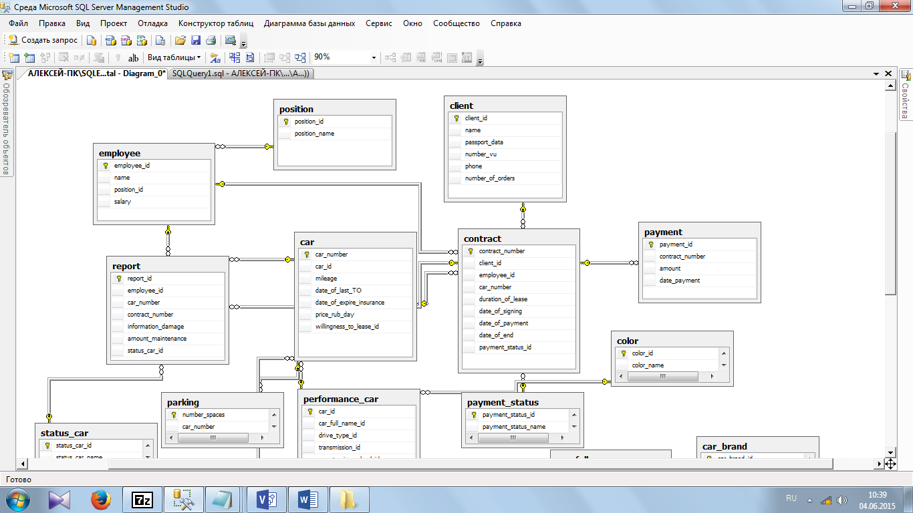

Вставка новых записей в базу данных в приложениях платформа .NET Framework Статья 10.10.2023 Участники: 12 В этой статье Вставка новых записей с помощью TableAdapters Вставка новых записей с помощью объектов команд Безопасность в .NET Связанный контент Примечание Наборы данных и связанные классы являются устаревшими технологиями платформа .NET Framework с начала 2000-х годов, которые позволяют приложениям работать с данными в памяти во время отключения приложений от базы данных. Они особенно полезны для приложений, которые позволяют пользователям изменять данные и сохранять изменения обратно в базу данных. Хотя наборы данных оказались очень успешными, мы рекомендуем новым приложениям .NET использовать Entity Framework Core. Entity Framework предоставляет более естественный способ работы с табличными данными в виде объектных моделей, и он имеет более простой интерфейс программирования. Чтобы вставить новые записи в базу данных с ADO.NET в проекте платформа .NET Framework, можно использовать TableAdapter.Update метод или один из методов DBDirect TableAdapter (в частностиTableAdapter.Insert, метод). Дополнительные сведения см. в статье TableAdapter. Если приложение не использует TableAdapters, можно использовать объекты команд (например, SqlCommandдля вставки новых записей в базу данных). Если приложение использует наборы данных для хранения данных, используйте TableAdapter.Update этот метод. Метод Update отправляет все изменения (обновления, вставки и удаления) в базу данных. Если приложение использует объекты для хранения данных или требуется более точное управление созданием новых записей в базе данных, используйте TableAdapter.Insert этот метод. Если в TableAdapter нет Insert метода, это означает, что параметр TableAdapter настроен на использование хранимых процедур или GenerateDBDirectMethods его свойство имеет значение false. Попробуйте задать для свойства true TableAdapter GenerateDBDirectMethods значение из конструктора наборов данных, а затем сохранить набор данных. Это действие повторно создает TableAdapter. Если tableAdapter по-прежнему не имеет Insert метода, таблица, вероятно, не предоставляет достаточно сведений о схеме, чтобы различать отдельные строки (например, в таблице может быть не задан первичный ключ). Примечание Эта статья относится к ADO.NET и разработке платформа .NET Framework. Для той же задачи с Entity Framework 6 см. статью "Добавление новой сущности в контекст". Сведения о Entity Framework Core см. в разделе "Добавление данных". Вставка новых записей с помощью TableAdapters TableAdapters предоставляют различные способы вставки новых записей в базу данных в зависимости от требований приложения. Если приложение использует наборы данных для хранения данных, можно добавить новые записи в нужный DataTable набор данных, а затем вызвать TableAdapter.Update метод. Метод TableAdapter.Update отправляет все изменения в DataTable базу данных (включая измененные и удаленные записи). Вставка новых записей в базу данных с помощью метода TableAdapter.Update Добавьте новые записи в нужное DataTable , создав новую DataRow и добавив ее в коллекцию Rows . После добавления новых строк в DataTableметод вызовите TableAdapter.Update метод. Вы можете управлять объемом данных для обновления путем передачи всего DataSetмассива DataTableили одного DataRowмассиваDataRow. В следующем коде показано, как добавить новую запись в базу DataTable данных, а затем вызвать TableAdapter.Update метод для сохранения новой строки в базе данных.

int idid = (int)Pacienti.SelectedValue;
var pac = db.Dannie_pac_.FirstOrDefault(x => x.id_pac == idid);
int selectedId3 = (int)biomat.SelectedValue;
var bibi = db.biomat.FirstOrDefault(x => x.id == selectedId3);
int orderId = bibi.id;
int selectedId2 = (int)yslygii.SelectedValue;
var ysl = db.services_.FirstOrDefault(x => x.id_service == selectedId2);
DateTime selectedDate = calendar.SelectedDate.GetValueOrDefault();
int selectedId4 = (int)yslygii.SelectedValue;
var price = db.services_.FirstOrDefault(x => x.Price == selectedId4.ToString());
var zakaz = new zakaz_
{
date_sozd = DateTime.Now,
yslygi = yslygii.Text,
status_zak = status.Text,
id_pacienta = pac.id_pac,
status_usl_v_zakaze = status_ysl.Text,
date_vipoln = selectedDate,
id_biomat = orderId,
price = ysl?.Price,
id_yslygi = ysl?.id_service
};
db.zakaz_.Add(zakaz);
db.SaveChanges();
MessageBox.Show("Заказ добавлен");
this.Close();